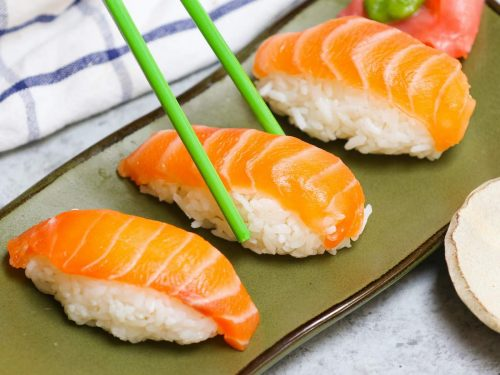

Salmon Sushi

A classic and simple Japanese dish best made with fresh Salmon and Sushi Rice.
This recipe contains the steps you need to create your very own Salmon Nigiri Sushi!
Ingredients
- Unseasoned Rice Vinegar
- Granulated Sugar
- Salt
- Short-grain Rice
- Sushi-grade Salmon
- Wasabi
- Soy Sauce
Steps
- Stir vinegar, sugar, and salt in a bowl until dissolved.
- Rinse rice with water; cook.
- Spread rice in a large glass baking dish; drizzle with vinegar mixture.
- Form rice mixture into 16 3x1 inch pieces.
- Top the rice pieces with Salmon slices.
- Serve with Wasabi and Soy Sauce.
Home Page